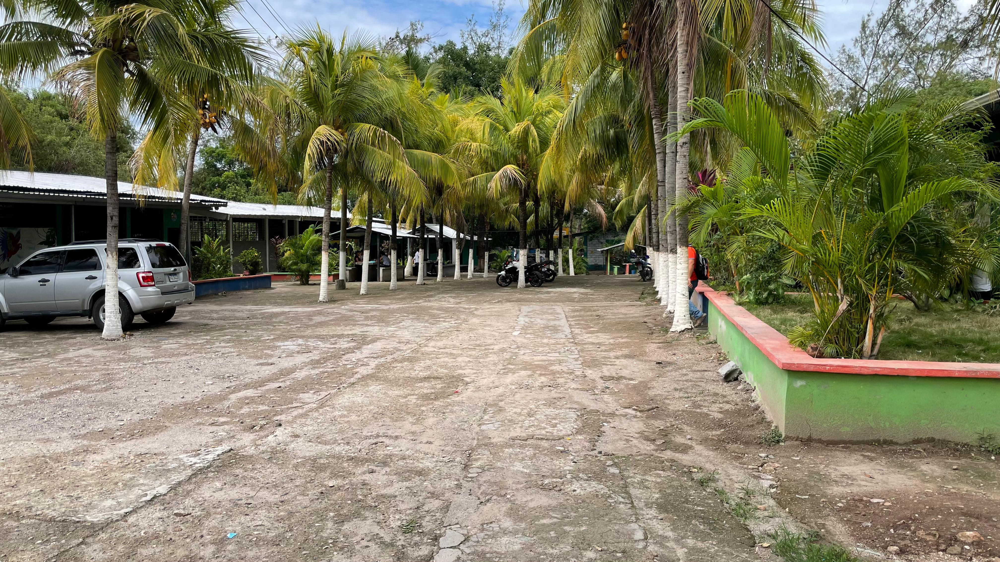

¿QUIENES SOMOS?

El Instituto Polivalente Oropoli es una institución educativa con una sólida trayectoria, dedicada a la formación integral. Su principal objetivo es cultivar no solo el conocimiento académico, sino también los valores humanos y sociales que permiten a sus estudiantes convertirse en ciudadanos responsables, proactivos y comprometidos con el desarrollo de su comunidad. Desde su fundación, el Instituto ha mantenido un firme compromiso con la excelencia educativa, brindando a sus alumnos las herramientas necesarias para desenvolverse con éxito en un entorno global cada vez más competitivo y cambiante. Fomentamos el pensamiento crítico, la innovación, el trabajo en equipo y el respeto por los demás, pilares fundamentales para construir una sociedad más justa y equitativa.
Nuestra Historia
El Instituto Polivalente “Oropoli” ubicado actualmente al noreste del casco urbano, fue fundado en 1981 según decreto Nª9 del 8 de enero de 1981 del poder legislativo. El Instituto Polivalente Oropoli fue fundado gracias a las gestiones emprendidas por el señor alcalde municipal de Oropoli en 1980, don Horacio Ochoa, y el Profesor Joaquín Videa Espinal, en su calidad de presidente de Junta Pro-Fundación del Instituto.
El Instituto funcionó en un local donado por la Alcaldía Municipal, un edificio vetusto y propenso a caerse, que fue reparado con fondos obtenidos en actividades económicas realizadas por la Junta Pro-Fundación del Instituto; donaciones del señor Luis Alberto González, Coronel Victorio Sánchez Cruz, comandante del sexto batallón, y recaudaciones hechas por activistas: Roberto Lagos, Francisco Borjas, Eleonor Mendoza, Elías Mendoza, José de la Cruz Galo y Abel Espinal.
Inició sus labores en 1982 con carácter semi-oficial, únicamente con primer curso de ciclo común con una matrícula de 67 alumnos(as), que pagaban L.10.00 mensual como colegiatura; los profesores(as) devengaban L.1.50 la hora clase. Se desempeñó como Director el Profesor Joaquín Videa Espinal, con un sueldo mensual de L.150.00; como Sub Director y Secretario el Profesor Jesús Antonio Jiménez Lagos, con un salario mensual de L.100.00; y como docentes la Profesora Doris Alejandrina Irías, el PM Francisco Mendoza Ponce, catedrático del idioma extranjero (inglés), y el Profesor Oscar Banegas, que daba la cátedra de Educación Musical. Estos dos últimos laboraban solo los sábados debido a que el primero viajaba desde Tegucigalpa y el último desde la ciudad de Yuscarán. En 1983 se creó el segundo curso de ciclo común; en 1984 se creo el tercero y en 1994 el Instituto Oropoli fue trasladado al edificio donde actualmente funciona, ubicado al este de la zona urbana, construido con fondos de la Municipalidad, colaboración de padres de familia, consejo de profesores(as), alumnos(as), Visión Mundial y Construcciones Escolares (hoy Bienes Nacionales), a un costo inicial de L.781,000.00 (setecientos ochenta y un mil lempiras exactos).
En 1986 el Instituto pasó de carácter semi-oficial a oficial, lo que produjo un aumento considerable en su matrícula, ya que los padres de familia no pagarían colegiatura de sus hijos(as). En 1995, el Congreso Nacional, según decreto N° 174-94 del 15 de diciembre de 1994, crea al Instituto Oropoli en su calidad de Polivalente, con talleres de Educación para el Hogar, Electricidad y Agropecuaria.
En 1998 se creó la carrera de Educación Comercial; dicha carrera estuvo vigente hasta 2015, habiendo egresado 425 alumnos(as) con el título de Perito Mercantil y Contador Público. En 2016, en el programa "Todos Podemos Avanzar", egresó el alumno Roger Esaú Zepeda Mendoza, uno de los últimos Peritos Mercantiles.
En 2000 se abrió la carrera de Bachillerato Técnico en Agricultura; desde 2008 han egresado 43 alumnos(as) con ese título.
En 2010 se creó la carrera de Bachillerato en Ciencias y Letras y Técnico en Computación; entre 2012 y 2015 egresaron 36 alumnos(as) con este título.
En 2014 se crearon las carreras de Bachillerato Técnico Profesional en Contaduría y Finanzas y Bachillerato Técnico Profesional en Informática. La primera y segunda promoción egresaron en 2016 y 2017, con 46 alumnos en Informática y 53 en Contaduría y Finanzas.
Debido a la vocación agrícola del centro educativo y gracias a las gestiones de la Profesora Ovinnia Andrea Herrera Valladares, se reimplementó la carrera de Agropecuaria desde 2019 con la modalidad Bachillerato Técnico Profesional en Desarrollo Agropecuario, que inició con 18 estudiantes.
En 1994-1995 se construyeron talleres de Hogar y un salón de usos múltiples; en 2001 se construyó la biblioteca con fondos del programa de Desarrollo Rural para la zona Oriental PRODERCO y el consejo de profesores del Instituto.
El Instituto cuenta con una porqueriza para cría y engorde de cerdos, construida en 1998 con un préstamo de L.679,888.00 otorgado por el BCIE a través de la Secretaría de Educación.
El PRACC Desarrollo Rural de la Comunidad Económica Europea construyó un galpón para gallinas ponedoras, cría y engorde de pollos y un taller de Electricidad, como donación. También hay equipamiento de hogar en alimentos y corte y confección.
Directores del Instituto:
- 1982-1986: Lic. Joaquín Videa Espinal
- 1986-1991: Profesor Esteban Enamorado (Interino)
- 1991-1992: Profesor Ismael Ortiz Mencias (Interino)
- 1992: Profesora Blanca Esmelda Sosa (Interino)
- 1993-2013: Lic. Joaquín Videa Espinal
- 2013 - Sept 2015: Lic. Iris Suyapa Ponce (Directora por Ley)
- Nov 2015 - Jul 2016: Lic. Doris Alejandrina Irías (En Funciones)
- Ago - Nov 2016: Lic. Enma Leticia Montoya (En Funciones)
- 2017-2018: MSc Ovinnia Andrea Herrera Valladares (Directora por Ley)
- 2019: Lic. Jorge Arturo Gonzalez Sanchez (Interino)
- 2020: Lic. Henry Jovanny Videa Irias (Interino-Permanente)
Actualmente, el Instituto cuenta con infraestructura para dos secciones por grado en Tercer Ciclo con una matrícula de 199 estudiantes en la jornada matutina. En la vespertina se atiende Bachillerato Técnico Profesional en Informática, Contaduría y Finanzas y Desarrollo e Innovación Agro-Forestal, con 163 estudiantes.
Los talleres de Alimentos, Corte y Confección, Electricidad y Agropecuaria funcionan de manera sostenible.
Misión
Formar estudiantes con sólidos valores humanos y profesionales, capaces de contribuir al desarrollo sostenible de la comunidad y el país.
Visión
Ser reconocidos como una institución educativa líder en la formación integral y técnica, promoviendo la innovación, responsabilidad y compromiso social.